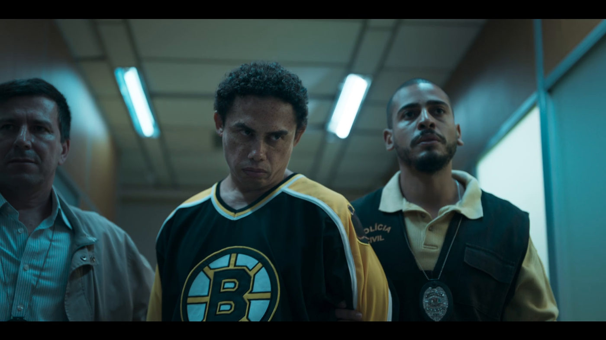

Silvero Pereira é o “Maníaco do Parque” em novo longa da Prime Vídeo

Com estreia marcada para 2024, o longa que conta a história de um dos seriais killers que mais amedrontou a população paulista dos anos 90, tem as primeiras imagens com o ator Silvero caracterizado como Francisco de Assis Pereira, o assassino, divulgadas.
O filme contará o fato a partir de uma repórter iniciante, Elena, que será interpretada por Giovanna Grigio. A moça vê na investigação dos crimes do homem conhecido como o maníaco do parque a grande chance de alavancar sua carreira. Ela revela as histórias de assassinatos enquanto Francisco segue livre atacando mulheres, e sua fama cresce vertiginosamente na mídia, gerando terror na capital paulista.
Com direção de Maurício Eça, e produção de Marcelo Braga, o roteiro de L.G. Bayão mergulhou na pesquisa da jornalista Thais Nunes, que destrinchou mídias e publicações da época, que chegaram a condenar o Maníaco por atacar 21 mulheres, assassinar dez delas e esconder seus corpos no Parque do Estado, em São Paulo.
No elenco também estão Bruno Garcia, que interpreta Zico, um jornalista galanteador e sem escrúpulos que trará problemas para Elena. Mel Lisboa é Martha - psiquiatra e irmã da protagonista, ela terá a importante função de ajudá-la a entender como funciona a mente de um psicopata. O rapper Xamã faz o papel de Nivaldo, um homem boa praça e chefe de Francisco.
Augusto Madeira é Medeiros, um dos delegados responsáveis pelo caso do Maníaco do Parque e fonte de informações de Elena e Zico. Christian Malheiros interpreta Beto, repórter fotográfico que se torna aliado de Elena. Bruna Mascarenhas faz o papel de Cristina, uma das vítimas de Francisco, crucial para a descoberta da identidade do assassino. Olivia Lopes representa Tainá, uma ex-namorada de Francisco que teve papel marcante em sua vida.
A produção será lançada juntamente com um doc, desenvolvido em conjunto, “O Maníaco do Parque: A História não Contada”, que revisita o caso do assassino condenado sob uma nova perspectiva, a de quatro vítimas sobreviventes.